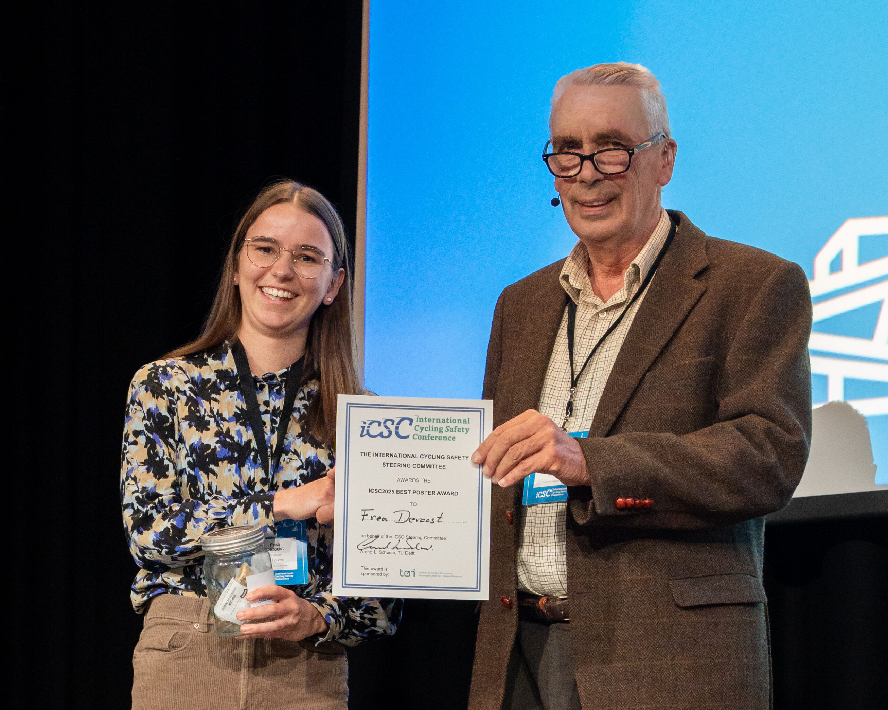
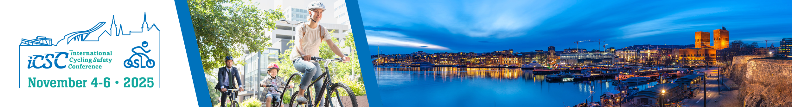
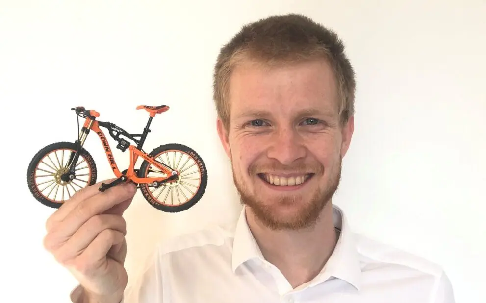

Neuroscience of Movement
in Aging and Disease (NoMAD)
laboratory
The NoMAD laboratory aims at understanding how the brain controls our movements and how it learns to perform new ones by means of detailed kinematic analyses of movement trajectories. NoMAD focuses on age- and disease-related effects on these sensorimotor processes.
latest news
Dec 2025
JJ was awarded
a new Senior Research project enttiled “MoCo: Motor Complexity and
aging”by the FWO. This four-year project can be summarized as follows:
“Elderly people usually perform worse than young adults in situations
where a cognitive task is performed simultaneously with a motor task
(e.g. talking while walking). This is often thought to reflect reduced
cognitive capacity in the elderly. However, reduced performance could
equally well be due to the fact that the elderly expend more resources
in performing the motor task itself. If so, then understanding the
source of increased difficulty in a motor task and adapting the task to
obviate the problem would be a practical way of reducing the real life
problems of dual tasking.For the first time this application directly
addresses the question of whether dual tasking is limited by cognitive
or motor resources using a variety of tasks that can be combined in
different ways.”
Dec 2025
The first
first-author paper of Stien Van De Plas entitled “Age-related changes in
proprioception are of limited size, outcome-dependent and
task-dependent” has been accepted at Geroscience
Dec 2025
The first
first-author paper of Anouck Mathijs entitled “Adults up to 80 years old
maintain effective movement planning when facing complex body dynamics”
has been accepted at Geroscience
Congratulations to Frea Deroost for getting the poster award for her poster at the International Cycling Safety conference. 
Congratulations to Frea Deroost for getting her participation to the International Cycling Safety conference supported by the FWO. 
For two months, we have the visit of François May, from université Gustave Eiffel (Lyon, France), who will work on the bike project with us. 
Sept 2025
Congratulations to Ilaria Carrara for getting a FWO fellowship for her
PhD on the effect of aging on proprioception.
Sept 2025
We are sad to
see Jef Leplae leaving the lab after two years. Lots of success for him
in his future projects (you might see him soon on Belgian television…).
While waiting for this, you can see him in action (recruiting add for
his study on cycling skills in children: here
Sept 2025
New preprint
from a collaboration with Mireille Broucke, Marius t’Hart and Denise
Henriques (University of Toronto): Modeling
Human Visuomotor Adaptation with a Disturbance Observer
Framework
Aug 2025
New paper
accepted from the PHD of Silke Kerstens: 3D-printable
stimulation electrodes to improve precision, reproducibility, and
reliability of transcranial electric current stimulation
June 2025
New preprint
from the cerebellar reserve project about the fact that cerebellar
function does not decline with age even though cerebellar structure
does: Preserved
cerebellar functions despite structural degeneration in older
adults
June 2025
New paper
accepted at the Journal of Neurophysiology: A
paradigm to study the learning of muscle activity patterns outside of
the natural repertoire
May 2025
New preprint
about the effect of age on proprioception: Age-related
changes in proprioception are of limited size, outcome-dependent and
task-dependent
Jean-Jacques participated to the Neural Control of Movement conference in Panama city.

March 2025
Both Frea
Deroost and Ilaria Carrara submitted an application for an FWO PhD
fellowship. Result in October 2025. New FWO research project submitted
about motor complexity and aging. Results in December 2025.
Jan 2025
New preprint
from my sabbatical time at Western University: A
paradigm to study the learning of muscle activity patterns outside of
the natural repertoire
Jan 2025
New paper
accepted with data collected in 2016… First paper of Pauline Hermans Not
fleeting but lasting: limited influence of aging on implicit adaptative
motor learning and its short-term retention. This is a failure to
replicate the decrease in spontaneous recovery with aging from Trewatha
(paper)
Dec 2024
New paper
accepted in collaboration with Rob Hardwick: A
control policy can be adapted to task demands during both motor
execution and motor planning
Oct 2024
During my
sabbatical stay at the Western University of Ontario (2022-2023), Andrew Pruszynski and I
discussed about the utility of the string pulling to study sensorimotor
behavior in marmosets. The first preprint from a future series of papers
is now out String-pulling
by the common marmoset. Exciting times
Oct 2024
Anda De Witte
and Anouck Matthijs succesfully presented their projects at the annual
meeting of Society for Neuroscience in Chicago. Anda talked about “Age-related
decline in cerebellar structure does not lead to a decline in cerebellar
motor function” and Anouck about “The
cerebellum as a potential key region for motor reserve in healthy
aging”
Sept 2024
We are
welcoming new students. In the framework of the FWO-funded
proprioception project, we are welcoming Ilaria Carrara and Danny
Koumans. Their co-promotor is An De Groef. We also welcome Tim
Maurissens who will work on an add-on to the bike project (testing
patients with Parkinson’s disease). His main promotor is Moran Gilat.
Last but not least, two new students joined our project focusing on
sensory processing in stroke patients. Siqi Yang will investigate the
changes in brain function with sensory processing using fNIRS (Main
promotor is Geert Verheyden). Ines Martins will look at the effect of
sensory learning on brain activity using fMRI (main promotor is Jolien
Gooijers).
June 2024
We have a new
lab logo for the NoMAD Lab The logo represents everything we are
interested in: young and old people, moving, biking, upper limb
movements, the brain, and the cerebellum.
May 2024
April 2024
April 2024
March 2024
Feb 2024
Summer 2023
May 2023
May 2023
May 2023
May 2023
May 2023
April 2023
March 2023
March 2023
December 2022 summer 2022 May-June 2022 1st of May 2022 March-April 2022 March 2022 November 2021 November 2021 Summer 2021 23 July 2021 31 May 2021 22nd of March, 2021 15th of March, 2021 February/March, 2021 February/March, 2021 January 2021 January 20th 2021 December, 2020 November, 2020 October, 2020 Octobre 1st, 2020 September 20, 2020 July 1, 2020 June 15, 2020 motor control and neuroimaging: link motor control and performance in competitive and elite sports: link Come and join us!! June 3, 2020 June 1st, 2020 May 27, 2020 May 9, 2020 March 31, 2020 Januari 20, 2020
Older News
Anouck Matthijs
and Anda De Witte have completed the data collection for our FWO-funded
research project on “Is there a motor reserve in the cerebellum”. The
datasets includes a variety of cognitive, motor and proprioception tasks
and some structural neuroimaging on 50 young adult, 80 older
adults and 30 80+ adults. What a feat!!!
We had two
visitors this month. Josh
Cashaback came right after NCM and gave a talk on “Movements
reflect decision deliberation”.
Caroline Nettekoven
followed a few days later and presented her work on an atlas for the
cerebellum “Navigating the cerebellum: A hierarchical functional
atlas for individual precision mapping”
Some members
of the lab (Anouck, Anda, Jef, Frea and JJ have travelled to Dubrovnik
in Croatia for the Neural control of
movement society meeting. Anda presented a poster entitled
“Reaching and Speech Adaptation in Healthy Young, Old and Older
Old Adults”. Anouck’s poster was about “Exploring
physical resilience during healthy aging: insights from an inter-joint
coordination task”. Jean-Jacques was also involved in three
other posters based on work done during his sabbatical at Western
University. One presented by Ali Ghavampour entitled “What Makes
Some Chords hard to Play? Exploring the Role of Muscle Synergies,
Biomechanical and Cognive Factors” (with Andrew Pruzynski and
Jörn Diedrichsen), one by Mike Karkuszewski “Characterizing
marmoset forelimb coordination in string-pulling” and the third
one was presented by Mathilde Bertrand “String-pulling behavior
in the aging marmoset”
The review
paper written with Jörn Diedrichsen on the diversity of function of the
cerebellum has been accepted for publication in Current Opinion in
Behavioral Sciences. The paper is entitled Diversity
of the nature of input and output signals in the cerebellum suggests a
diversity of function.
The preprint of
Pauline and Koen Not
fleeting but lasting: Limited influence of aging on implicit adaptative
motor learning and its short-term retention has been positively
recommended by the PeerCommunity in Health
and Movement Sciences. Recommendation reads like : “A
main strength of the current paper is the rigor applied to testing this
question. The authors provide robust, converging evidence from multiple
analyses and statistical methods, and control for confounds both
statistically and experimentally.”.
The Funds for
Flemish Research (FWO) has awarded a new project grant to the lab. This
project in collaboration with An De
Groef is entitled Multifaceted approach to investigate
position sense in health and disease. We will be recruiting two
PhD students to work on this project. Contact me if you are interested
in working on that topic.
Two new papers
just accepted. First one is led by Lisa Decraene and in
collaboration with Hilde
Feys on bimanual coordination in 50 typically-developing children
and 50 children with cerebral palsy: In-depth quantification of
bimanual coordination using the Kinarm exoskeleton robot in children
with unilateral cerebral palsy. The second is the last paper
from the PhD thesis of Veerle de Rond (Promotor
is Alice Nieuwboer)
and has been accepted in Scientific report: Neural correlates of
weight-shift training in older adults: a randomized controlled
study.
New preprint with
Rob Hardwick: A
control policy can be adapted to task demands during both motor
execution and motor planning
Congratulations
to Pauline Hermans and Koen Vandevoorde for the preprint entitled Not
fleeting but lasting: Limited influence of aging on implicit adaptative
motor learning and its short-term retention. This preprint has been
submitted to the PeerCommunity in Health
and Movement Sciences
Congratulations
to Leen Saenen whose paper entitled The
differential effect of age on upper limb sensory processing,
proprioception and motor function has been accepted at Journal of
Neurophysiology
We welcome Frea
Deroost and Jef Leplae to the team. They will work on the MAESTRO
project where they will investigate the effect of aging on bike
abilities. Co-promotor is Friedl De Groote.
2023 will be
an amazing year in terms of paper as several projects are being
completed and papers accepted. Veerle De Rond has a third paper accepted
on muscle activity of lower back muscles during weight-shifting: Lower
back muscle activity during weight-shifting is affected by ageing and
dual-tasking. Britt Vandoorent has a first PhD paper accepted:
Effect
of transcranial direct current stimulation on learning in older adults
with and without Parkinson’s disease: A systematic review with
meta-analysis, Finally, the preprint with the group of
Konstantina Kilteni has been accepted at JNeurophysiology: Aging
exerts a limited influence on the perception of self-generated and
externally generated touch. Congrats to all those involved.
Our C2-project
entitled MAeSTRO: neuro-Musculosketetal ASsessement and Training of
Older adults for safe (e-)cycling has been awarded. Two new
PhD-students will be recruited. This is a collaboration with my
colleagues Friedl De Groote and Jannique Van Uffelen.
New
meta-science paper issued from an online collaboration and led by
Olivier Corneille (UCLouvain, Belgium): Point of View:
Beware ‘persuasive communication devices’ when writing and reading
scientific articles. Twitter thread here
New paper led
by Sanne Broeder: A
smartphone-based tapping task as a marker of medication response in
Parkinson’s Disease: a proof-of-concept study.
New paper led
by Veerle de Rond: Test-retest
reliability of functional near-infrared spectroscopy during a
finger-tapping and postural task in healthy older adults.
Congratulations
to Veerle de Rond for her PhD thesis entitled Shifting the gear on
shifting weight: behavioral, neural and neuromuscular correlates of
ageing. Her main promotor is Alice Nieuwboer.
Just back
from the NCM conference in Victoria where we talked about our research.
Anouck Matthijs presented a poster entitled ” Can physical
resilience explain the variability in age-related changes in motor
function? “. Anda De witte had a poster on”
Cerebellum-Dependent Motor Prediction and Adaptation in Healthy
Old Adults versus Young Adults “. The poster of Stien Van De
Plas was about” Aging is detrimental to sensory function. Or is
it? Let’s have a look at touch and proprioception. “. Finally,
JJ organized a panel session on” Age- and disease-related
changes in the cerebellum impact motor function “. Other
speakers included Di Cao (Hopkins), Jovin Jacobs (Champalimaud) and
Alanna Watt (Mc Gill). JJO gave a talk entiteld”Is there a
cerebellar motor reserve “.
New preprint
led by Lili Timar from the team of Konstantina Kilteni: Aging
exerts a limited influence on the perception of self-generated and
externally generated touch. It was a real pleasure to
collaborate with them on this topic. This is a very strong paper
methodologically (high sample size, pre-registered).
New paper led
by Sanne Broeder: Transcranial
direct current stimulation enhances motor learning in Parkinson’s
disease: a randomized controlled trial.
Congratulations to Leen Saenen for defending her PhD entitled: Upper
limb sensory processing: development of a robotic paradigm.
Congratulations to
Silke Kerstens for a new paper: A
novel tDCS control condition using optimized anesthetic gel to block
peripheral nerve input. First of a series with Myles
McLaughlin
Take-over of
Twitter by EM did not please many people including me… Therefore, I am
tweeting less and tooting more. You can find me at @jjodx@fediscience.org
Congratulations
to Leen Saenen for her first first-author paper on sensory
processing/haptic perception in stroke patients: Development and
Validation of a Novel Robot-Based Assessment of Upper Limb Sensory
Processing in Chronic Stroke. First joint paper with my colleague Geert
Verheyden
Leen also has a new preprint on the effect of age on
haptic perception : The
differential effect of age on upper limb sensory processing,
proprioception and motor function
JJ goes to
Canada for his sabbatical until summer 2023. He will work with Andrew
Pruszynski, Joern Diedrichsen and Paul Gribble at Western University
(London,ON, Canada)
Bike
project will not be funded by an internal grant of KU Leuven, at least
not this year. But comments are encouraging and give us food for
thoughts. It’s rejection season, no fellowship from FWO to Anouck either
(not yet ;-) )
We are
sad to see Matheus Maia Pacheco leaving our group but we wish a lot of
success for his new adventure as an assistant Professor at the
University of Porto in Portugal.
Many
grants and fellowship were submitted:
The first
pre-print of our bike project with Maarten Afschrift, Anouck Mathijs and
Friedl De Groote is out: Turning the head while
biking makes older people lose cycling direction and balance
Just
before Christmas, the first paper of Manasa Parthasharathy has been
accepted for publication at the Journal of Neuropshysiology: Increased
upper-limb sensory attenuation with age
We waved
goodbye to Manasa Parthasharathy who became Business Development Manager
at icometrix
Our team is
growing. We welcome Anda De Witte on the 1st of July and Anouck Matthijs
on the 1st of September. They will work on the FWO-funded project: “Is
there a motor reserve in the cerebellum”. Exciting times!
The last
paper from the PhD of Koen Vandevoorde has been accepted for publication
in the Journal of Neurophysiology: “Does
proprioceptive acuity influence the extent of implicit sensorimotor
adaptation in young and older adults?”. This is the last piece of a
very enjoyable and fruitful collaboration.
Congrats to
Veerle for the acceptance of her first first-author paper entitled “Compromised
Brain Activity With Age During a Game-Like Dynamic Balance Task: Single-
vs. Dual-Task Performance”. Well done Veerle !
Last
paper from the PhD thesis of Guy Rens has been accepted at
Neuropsychologia: Motor resonance is modulated by an object’s weight
distribution. Well done Guy!
Preprint
New
preprint with Ryan Morehead (Leeds University, UK): A
Synthesis of the Many Errors and Learning Processes of Visuomotor
Adaptation.
The tweeprint
made by
Ryan is available here: https://twitter.com/rmhead/status/1371669385367195648
I
am recruiting two PhD students to work on a FWO-funded project focused
on cerebellar motor functions, aging and structural imaging. Please
apply here: https://www.kuleuven.be/personeel/jobsite/jobs/56170382
Dante Mantini and Jean-Jacques are thrilled to welcome Matheus Pacheco
as a
post-doc. Matheus will use EEG to unravel age-related changes in error
processing.
JJ was
interviewed on Open Science. You can read the interview here: An
open scientist helps research and himself or herself to move
forward
Congrats to Guy Rens who got his paper entitled “Lift observation
conveys object weight distribution but partly enhances predictive lift
planning” accepted for publication in the Journal of
Neurophysiology.
Preprint
Jean-Jacques got a grant from the FWO
(Flemish Research Foundation) to work on a project entitled: “Is
there a motor reserve in the cerebellum”. This project focuses on
measuring age-related changes in motor function based on a large task
battery and included structural MRI as well.
Paper
with Friedl De Groote
,
Stefanie Vandevyvere and Florian Vanhevel accepted by Gait & Posture
(after a very long review process that did not really change the paper)
(paper).
Preprint is available here.
Data and
code are on
the Open Science Framework (LINK)
We have
several preprints
out
there:
Manasa Parthasharathy: Increased
upper-limb sensory attenuation with age
Koen Vandevoorde: Does
somatosensory acuity influence the extent of internal model
recalibration in young and older adults?
Guy Rens: Motor resonance is
modulated by an object’s weight distribution
Stien
Van De Plas starts her PhD today. Welcome Stien! She will work on the
role of somatosensation on motor control for the next four years.
Co-promotor is Dante Mantini.
Two
new papers published in the Special Issue of the Journal of
Computational Neuroscience dedicated to Lance Optican. See the
publication page.
Koen
Vandevoorde’s paper was published in Journal of Neurophysiology (paper). Preprint is
available here
The
departement of Movement Sciences is recruiting two tenure-track
professors:
Together
with Prof. Dante Mantini, we are recruiting a PhD student to work on the
influence of a decline in somatosensory function on motor control and
learning. Vacancy is available here
Note, the candidate has to be fluent in Dutch as s/he has to act as
teaching assistant in that language
Never
forget to submit your paper as preprint first! We did forget to do it
for this one but after being 4 months under review at
Gait&Posture, we decided that it was enough. Preprint
entitled “Validation of a smartphone embedded inertial measurement unit
for measuring postural stability in older adults” is available here
Together
with Prof. Dante Mantini, we are recruiting a post-doc to work on EEG
and motor adaptation. Vacancy is available here
Koen
Vandevoorde got his paper accepted in Journal of Neurophysiology.
Preprint is available here
Congrats
to Guy Rens who got his paper entitled Sensorimotor
Expectations Bias Motor Resonance during Observation of Object Lifting:
The Causal Role of pSTS accepted in Journal of Neuroscience.
With
Prof. Friedl De Groote, we submitted a paper entitled “Validation of
a smartphone embedded inertial measurement unit for measuring postural
stability in older adults” to Gait&Posture.